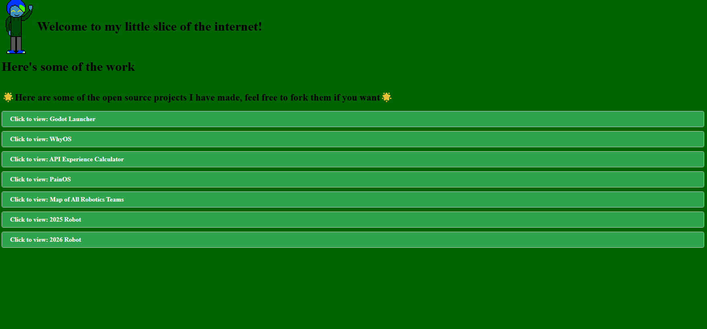
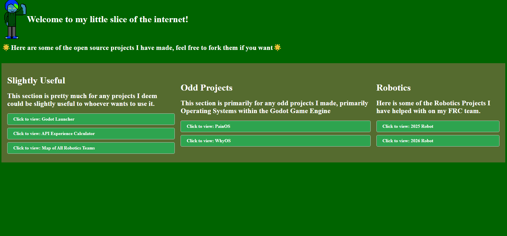
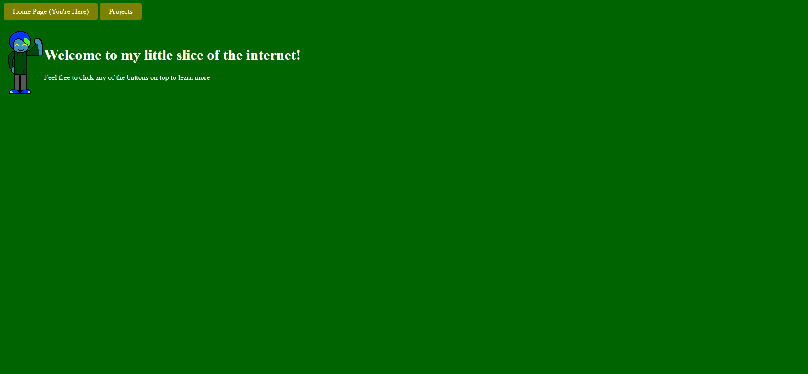
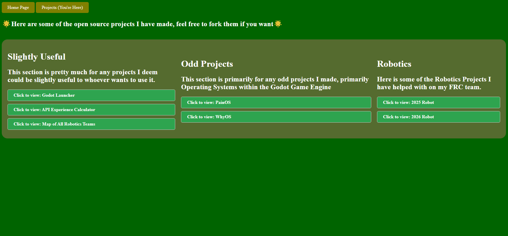
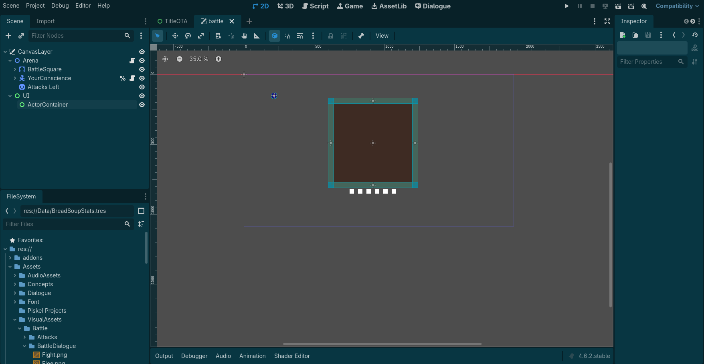

2026 Week 17 Updates
Posted April 26, 2026
This is my first blog post for this website. Let's discuss what has happened over the course of this week.
Tuesday and Wednesday: Taking Root
On Tuesday, I actually started my webpage, where initially, the home page, which was just HTML, had more lines of code than the stylesheet. That day was primarily focused on seeing if I could make a website using GitHub Pages, and well, it worked.


The first image, with Black Text, and using Times New Roman, was the result of the first day. I figured out how to use containers, being <div>, I also used <details>, alongside <summary> to make a dropdown without needing any JavaScript. On the second day, I changed the text color from black to white, and also attempted to have some semblance of organization for my projects, granted, it was quite Janky and didn't work that great, though I did replace the horrendous white for the details with Dark Slate Gray.
Thursday: Buttons!
At this time, I was kind of busy, as my school had a sort of mock-interview thing, where we pretty much prepared for interviews and got feedback on how we did. In between some of those interviews, I managed to make a major change to the website.


Yep, I moved the projects into their own section. That was pretty much all I made in changes, though I did also manage to make stylized links that looked like buttons.
Friday: SOTA
Yep, despite not really working on it for the past 11 days due to being busy with stuff at school, I didn't get much time to work on it. Here's what the main change has been so far.

Basically as of right now, I am actually attempting to restructure my battle system to be more data driven, to allow people to mod the game once it's finished. I hope to be able to get out a demo by July. I suppose I should also mention, the reason this isn't in my projects section is due to the fact that my projects section I feel fits more for my open source projects, this project is basically closed-source after all.
Saturday: Professionality
Today, I mainly worked on this website to make it seem much more professional, primarily by centering everything, making the website background darker, animating more buttons and button animations, etc. Overall, Saturday was pretty much dedicated to making this webpage seem as professional as possible. Depending on how long I am awake for, I might either post these on Saturdays, or technically the next week on a Sunday.